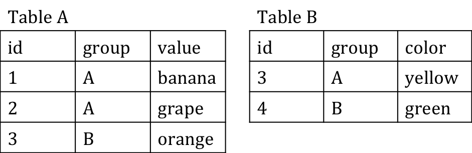

Ranae Dietzel & Andee Kaplan
Discuss the result of the following joins using the tables:

R
dplyr also has joins implemented.
dplyr
left_join()
right_join()
inner_join()
full_join()
You can control the variables to join on by using by = "common_name" or by = c("column_a" = "column_b", ...) as a parameter in the join function.
by = "common_name"
by = c("column_a" = "column_b", ...)
I have the Star Wars DB in an R data object (rather than a SQLite database) available so that we can
library(dplyr) load("data/star_wars.RData")
planet %>% mutate(max_pop = max(population, na.rm = TRUE)) %>% filter(population == max_pop) %>% select(name)
## name ## 1 Coruscant
person %>% group_by(homeworld_id) %>% summarise(count = n()) %>% inner_join(planet, by = c("homeworld_id" = "planet_id")) %>% inner_join(species, by = c("homeworld_id")) %>% select(name.x, count, name.y) %>% arrange(desc(count)) %>% head(1)
## # A tibble: 1 × 3 ## name.x count name.y ## <chr> <int> <chr> ## 1 Naboo 11 Gungan
pilot %>% group_by(pilot_id) %>% summarise(count = n()) %>% inner_join(person, by=c("pilot_id" = "person_id")) %>% arrange(desc(count)) %>% select(name, count) %>% head(1)
## # A tibble: 1 × 2 ## name count ## <chr> <int> ## 1 Obi-Wan Kenobi 6
pilot %>% filter(craft_type == "vehicle") %>% group_by(pilot_id) %>% summarise(count = n()) %>% inner_join(person, by=c("pilot_id" = "person_id")) %>% arrange(desc(count)) %>% select(name, count) %>% head(2)
## # A tibble: 2 × 2 ## name count ## <chr> <int> ## 1 Luke Skywalker 2 ## 2 Anakin Skywalker 2
Use dplyr to answer the following